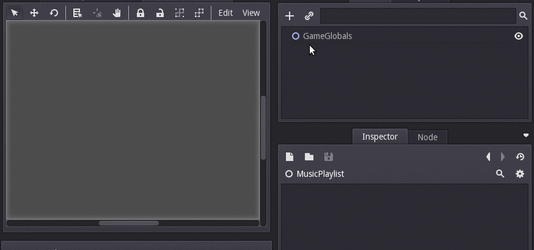
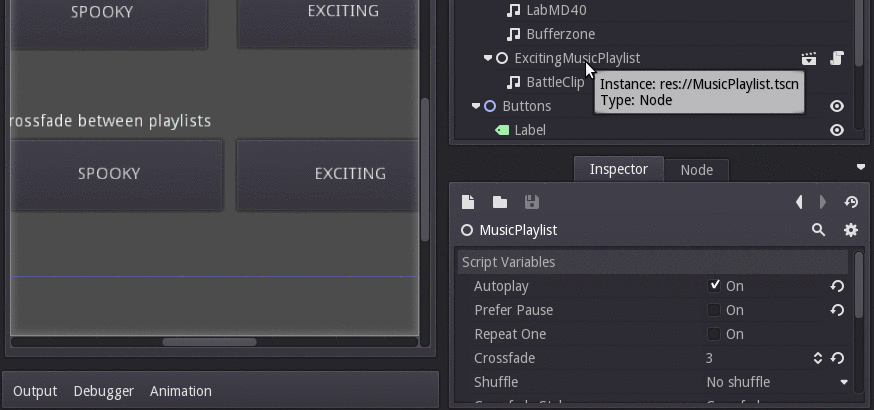

For the puzzle game Sawdust, I needed a powerful enough playlist and music mixing system so I could crossfade between tracks based on what's going on in the game, and so that I could make the soundtrack less repetitive by composing a collection of shorter ambient pieces that are played on shuffle.
So, I wrote Godot Music Mixer, which you can use in your projects!
Directly download the project (with an example) as a zip file here.
Basic usage
Simply instance the MusicPlaylist.tscn, and add any number of StreamPlayer children for each individual track. Arrange them in any order you see fit, or just check "shuffle" to get a random order every time!

This is the simplest use: Basically, a playlist player resembling a desktop application.
Adaptive music in video games is music that responds to what's going on. A way you can accomplish this is by writing some calm, ambient tracks that play when your character is just moving around, and then write some other more exciting tracks, then crossfade between them based on events in the game, such as a certain number of enemies being nearby, a boss battle, and so on.
For the transition to be smooth, you'll probably want to crossfade. This is where the my package comes into play.
Adaptive music
The example included in the repository shows how you can make adaptive music. In summary:
- Create one master MusicPlaylist: This is the one you will start/stop, and switch between "moods". Set autoplay = true, and "crossfade" to some appropriate amount, such as 3 seconds.
- Create a playlist for your "calm" music called "Calm", and add StreamPlayers for each track. Set it to "prefer pause", so that when you go back from "action" mode. A cool effect is writing a collection of short ambient tracks, then setting "shuffle" and "crossfade", so the ambient songs are random every time.
- Create an action playlist named "Action", and add a StreamPlayer for each track.
- It will start in "calm" mode. To switch to action, do
get_node('MusicPlaylist').crossfade_to_child('Action'). And as you may have guessed, to switch to calm doget_node('MusicPlaylist').crossfade_to_child('Calm'):)

For full information, read the README at the BitBucket page. It's free / open source software, so contributions are of course welcome!
I hope my package is useful! It's free for any sort of use, but please let me know if you end up using it if you have the time. :)